Candidate A
Best balance so far: more natural shepherd anatomy, clear darker face, readable bandana/collar, and stronger side-view proportions.
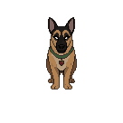
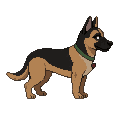
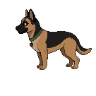
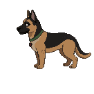
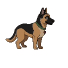
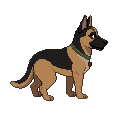
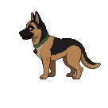
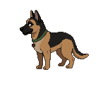
Goal: choose the production identity seed for Phoenix before spending animation generations. Candidate D is currently the strongest foundation because it preserves Candidate A's proportions while improving the shepherd mask and animation-ready identity details.
Best balance so far: more natural shepherd anatomy, clear darker face, readable bandana/collar, and stronger side-view proportions.








Readable, but too golden and simplified. It feels less like Phoenix and less premium than the target mockups.
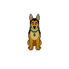
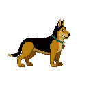
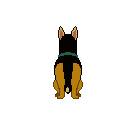
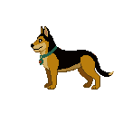
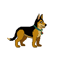
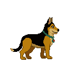
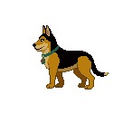
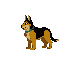
Stronger tiny-size contrast and black saddle, but compressed proportions make it feel less premium and less expressive.
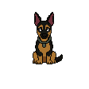
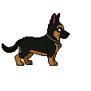
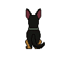
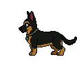
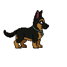
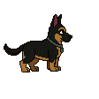
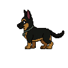
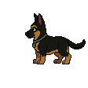
Refinement of Candidate A: stronger face mask, balanced shepherd proportions, readable bandana/collar/tag, and the same inherited animation skeleton.
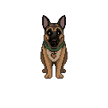
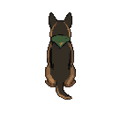
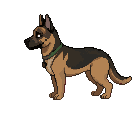
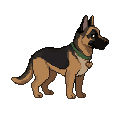
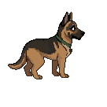
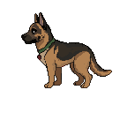
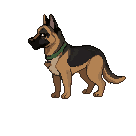